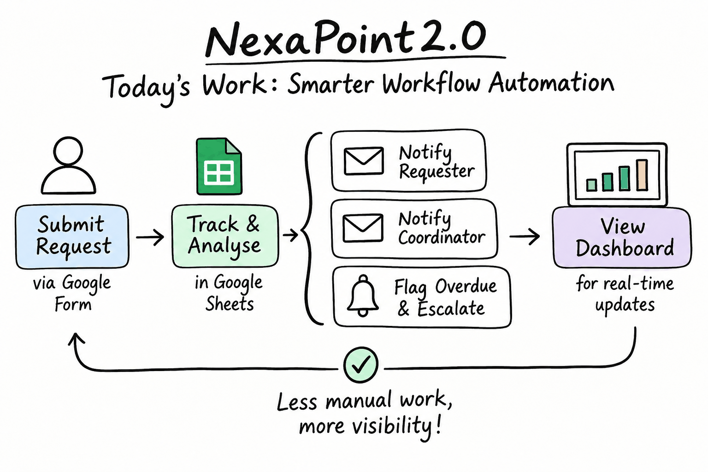

Automation project · NexaPoint series · Version 2.0
NexaPoint2.0: Business Operations Automation
A practical request-management workflow connecting form submissions, tracking, notifications, AI-assisted summaries, escalation and reporting.
Download NexaPoint2.0 case study ← Back to automation projectsThe problem
Internal requests can arrive through different channels, making it difficult to track ownership, status and deadlines. Coordinators may also spend time acknowledging submissions, sending updates and following up on delayed work.
NexaPoint2.0 brings these steps into a clearer process. The aim is to reduce repetitive administration and make request progress easier to see, while keeping operational decisions with the coordinator.
How the workflow runs
- Google Forms: request submissionA requester enters their details, request information, priority and preferred completion date.
- Apps Script: request registrationThe submission is processed, assigned a unique request ID and added to the Requests register in Google Sheets.
- Gmail: automatic notificationsThe requester receives a confirmation and the coordinator receives a new-request notification.
- Gemini API: AI-assisted analysisGemini creates a short summary and suggests a possible next action. The output is saved against the request.
- Coordinator: review and status updatesThe coordinator manages the request. Status changes trigger updates to both the requester and coordinator.
- Apps Script: monitoring and escalationDeadline tracking identifies overdue requests, while scheduled logic checks unresolved requests against configured escalation rules.
- Google Sheets: operational dashboardThe dashboard presents request totals, status figures, overdue and escalated items, and departmental workload.
Workflow at a glance

What the system handles
| Feature | What it does |
|---|---|
| Request registration | Stores new requests in a structured register and assigns a unique ID. |
| Email notifications | Sends submission confirmations and status updates to requester and coordinator. |
| AI-assisted analysis | Creates a short summary and suggested next action for coordinator review. |
| Status and activity tracking | Tracks operational changes and records key activity in an activity log. |
| Overdue monitoring | Uses request deadlines and status to identify overdue work. |
| Escalation | Checks eligible unresolved requests and can notify the coordinator. |
| Dashboard | Shows request totals, status, overdue items, escalations and departmental workload. |
Technology and design choices
- Google Forms provides a consistent request intake point.
- Google Sheets acts as the initial operations register and reporting layer.
- Google Apps Script connects the steps and applies workflow rules.
- Gemini API supports request understanding with summaries and recommendations.
- Gmail handles automated communication.
Human oversight: AI does not approve, reject or make management decisions. The coordinator remains responsible for review, assignment, prioritisation and outcomes.
Build notes and testing
During testing, I found that some new submissions were being written thousands of rows below the existing records. I corrected the registration logic so it finds the next available row using the Request ID column.
Form submission, request registration, email notifications, Gemini analysis, status updates and dashboard setup have been exercised during development. The escalation logic is implemented; a controlled test of the escalation email and a full end-to-end validation remain part of final verification.
Project context: NexaPoint is a fictional business operations simulation created for portfolio and learning purposes. It is not presented as a live employer deployment.
My contribution
I worked on the process design, request data structure, Apps Script automation, Gemini integration, notification logic, escalation rules, dashboard setup and troubleshooting. The project helped me practise translating an operational process into workflow steps, testing automation and improving it when issues appeared in use.
Let's connect
I am interested in project coordination, project support, business analysis and IT delivery opportunities.
Email me LinkedIn (opens in new tab) GitHub (opens in new tab) Download CV